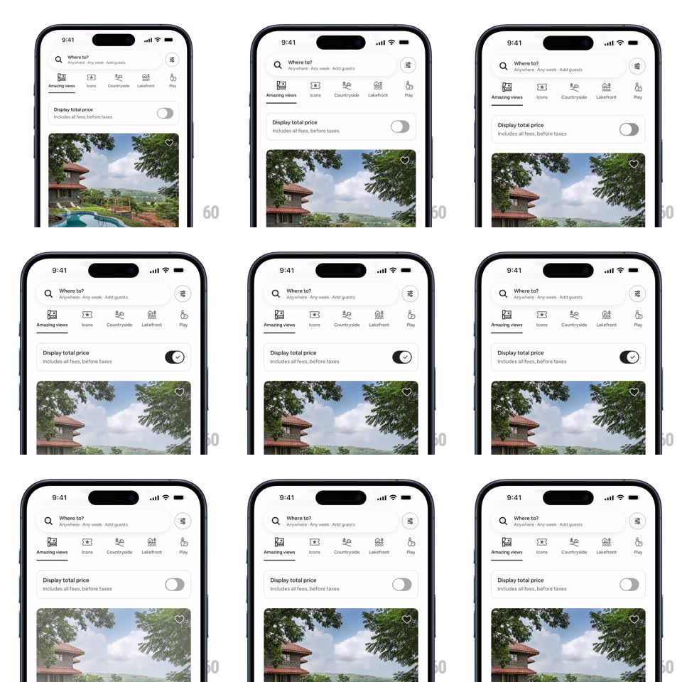

Media
Frame-by-frame

Rebuild this interaction 1:1: Airbnb's "Display total price" toggle - tapping the switch slides its thumb to the right, fills the track black, and pops a white checkmark inside the thumb as the listing prices below update.

Rebuild this interaction 1:1: Airbnb's "Display total price" toggle - tapping the switch slides its thumb to the right, fills the track black, and pops a white checkmark inside the thumb as the listing prices below update. ## Integration Integration: stack-agnostic spec - springs given as stiffness/damping, timed motions as duration + curve; map every value to your framework and animation library of choice. ## Scene Airbnb search results: "Where to?" search pill, category icon rail (Amazing views, Icons, Countryside, Lakefront, Play), then a "Display total price / Includes all fees, before taxes" row with an iOS-style switch at the right, and the first listing card (villa photo with heart) below. ## Motion spec Pattern: toggle switch with thumb-state icon swap. - Track: gray (#E4E4E4) to black fill, 200ms ease-out, following the thumb. - Thumb: white circle slides left to right across the track (~24px travel, spring ~400/28, ~250ms, minimal overshoot). - As the thumb lands, a checkmark fades/scales in at the thumb's center (scale 0.5 -> 1, 150ms); the check is dark on the white thumb. - Reverse runs the same choreography backward: check fades out first, then thumb slides home as the track drains to gray. - The listing area below crossfades its price text when the toggle settles (150ms). ## Calibration - The checkmark appears only after the thumb completes its travel - it is a landing accent, not a mid-flight swap. - Track color follows thumb position; no two-phase color pop. ## Reduced motion Track and thumb change state instantly with a 150ms crossfade on the checkmark. ## Don't miss - The switch sits right-aligned on the "Display total price" row, below the category rail. - Off-state thumb is plain white with a soft shadow; on-state adds the checkmark glyph.